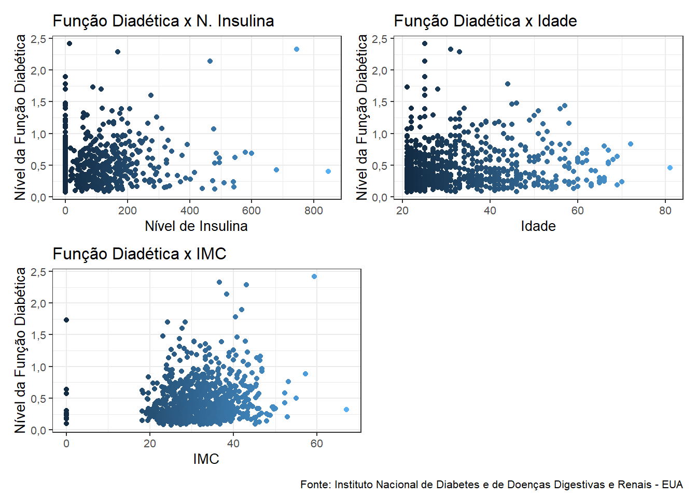
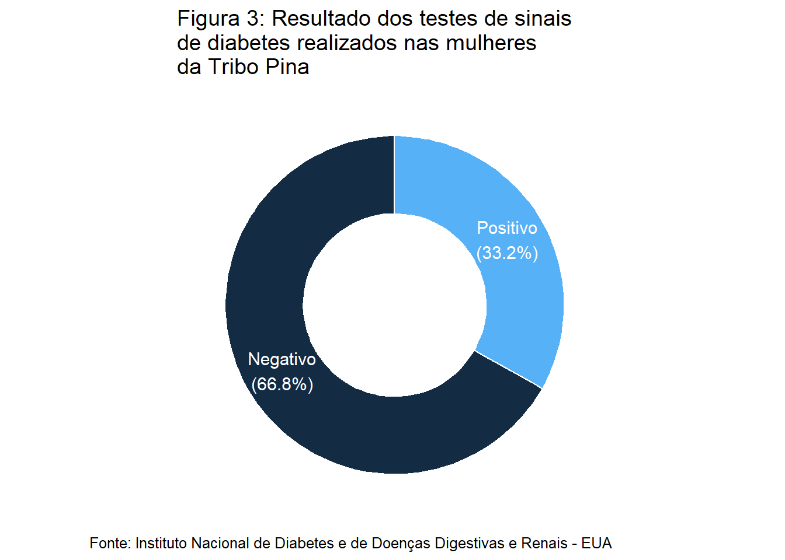

| Min | Q1 | Med | Média | Q3 | Max | D.Padrão | CV | |
|---|---|---|---|---|---|---|---|---|
| Glicose | 0,00 | 99,00 | 117,00 | 120,89 | 140,50 | 199,00 | 31,97 | 0,26 |
| Idade | 21,00 | 24,00 | 29,00 | 33,24 | 41,00 | 81,00 | 11,76 | 0,35 |
| IMC | 0,00 | 27,30 | 32,00 | 31,99 | 36,60 | 67,10 | 7,88 | 0,25 |
| Largura Triceps | 0,00 | 0,00 | 23,00 | 20,54 | 32,00 | 99,00 | 15,95 | 0,78 |
| N° de Gestações | 0,00 | 1,00 | 3,00 | 3,85 | 6,00 | 17,00 | 3,37 | 0,88 |
| Nivel Diabético | 0,08 | 0,24 | 0,37 | 0,47 | 0,63 | 2,42 | 0,33 | 0,70 |
| Nível Insulina | 0,00 | 0,00 | 30,50 | 79,80 | 127,50 | 846,00 | 115,24 | 1,44 |
| P. Diastólica | 0,00 | 62,00 | 72,00 | 69,11 | 80,00 | 122,00 | 19,36 | 0,28 |
| Note: | ||||||||
| Fonte: Instituto Nacional de Diabetes e de Doenças Digestivas e Renais - EUA |
LABORATÓRIO 1: Relação da concentração de glicose no plasma com características diversas
Apresentação
Este relatório visa a descrição da análise realizada nos dados oriundos do Instituto Nacional de Diabetes e de Doenças Digestivas e Renais dos EUA que conduziram um estudo com 768 mulheres da tribo Pina, que residem próximo a Phoenix e coletaram as seguintes características das participantes do estudo:
- Número de gestações [pregnat];
- Concentração de glicose no plasma (obtido duas horas depois da realização de um teste de tolerância a glicose) [glucose]; pressão sanguínea diastólica (mmHg) [diastolic];
- Largura do tríceps (mm) [triceps];
- Nível de insulina (µU/ml) [insulin];
- Índice de massa corpórea (kg/m2) [bmi];
- Nível de função diabética [diabetes];
- Iidade em anos [age];
- Teste para avaliação de sinais de diabetes (0 = negativo e 1 = positivo) [teste].
Análise Descritiva
Neste primeiro momento será realizada a análise das características sem nenhum tipo de tratativa dos dados, a fim de identificar padrões, partindo, a princípio, da tabela contendo as principais medidas de posição e dispersão.
Conforme consta na Figura 1, cerca de 35% das participantes apresentaram resultado positivo para a presença de sinais de diabetes.
A fim de avaliar a correlação entre a variável de interesse (Nível de Diabetes) com as demais variáveis, foram construídos gráficos de dispersão para realização desta avaliação.

| Min | Q1 | Med | Média | Q3 | Max | D. Padrão | CV | |
|---|---|---|---|---|---|---|---|---|
| Glicose | 56,00 | 99,00 | 119,00 | 122,63 | 143,00 | 198,00 | 30,86 | 0,25 |
| Idade | 21,00 | 23,00 | 27,00 | 30,86 | 36,00 | 81,00 | 10,20 | 0,33 |
| IMC | 18,20 | 28,40 | 33,20 | 33,09 | 37,10 | 67,10 | 7,03 | 0,21 |
| Largura Triceps | 7,00 | 21,00 | 29,00 | 29,15 | 37,00 | 63,00 | 10,52 | 0,36 |
| N° de Gestações | 0,00 | 1,00 | 2,00 | 3,30 | 5,00 | 17,00 | 3,21 | 0,97 |
| Nivel Diabético | 0,09 | 0,27 | 0,45 | 0,52 | 0,69 | 2,42 | 0,35 | 0,66 |
| Nível Insulina | 14,00 | 76,50 | 125,50 | 156,06 | 190,00 | 846,00 | 118,84 | 0,76 |
| P. Diastólica | 24,00 | 62,00 | 70,00 | 70,66 | 78,00 | 110,00 | 12,50 | 0,18 |
| Note: | ||||||||
| Fonte: Instituto Nacional de Diabetes e de Doenças Digestivas e Renais - EUA |
